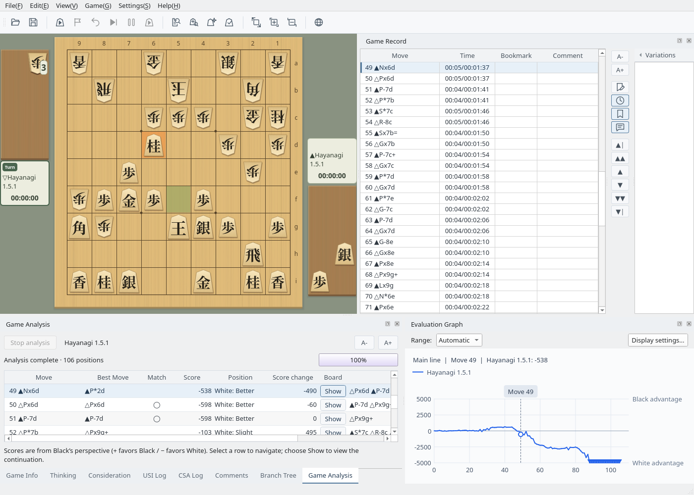

Study & Analysis
Study & Analysis
Candidate moves as arrows,
the game's flow as a graph
Register a USI engine to explore any position in Consideration mode or analyze a whole game at once. The evaluation graph and the results table take you straight to the moves where the game turned.
- Candidate moves appear as numbered arrows; drops start from the piece stand
- Game Analysis lists each move's score, whether it matched the best move, and the score change
- See the engine's best move as an arrow during games; engine-vs-engine games show both sides' thinking
- Organize your study with the branch tree, bookmarks, and comments

